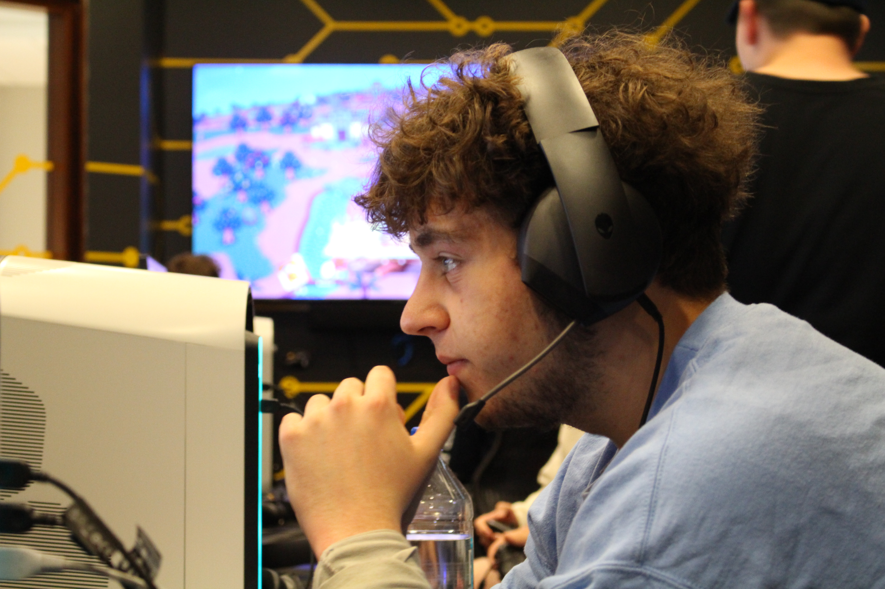

Hi! I'm Joey Fisher. I graduated from Central Academy of Technology & Arts Highschool, and am currently attending Elon University as a second year student. I am majoring in Cinema and Television Arts, and I am minoring in Digital Art. I have done some freelance editing jobs in the past, but have no official work experience.

My family consists of my Mom, my Dad, my older sister, and my dog. My sisters name is Allyson. She graduated from Converse College in South Carolina with a degree in Interior Design. My Dogs name is Josie. She is a Shitzu-Poodle mix and is 12 years old. We live in Charlotte North Carolina, which is also where I was born!